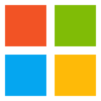
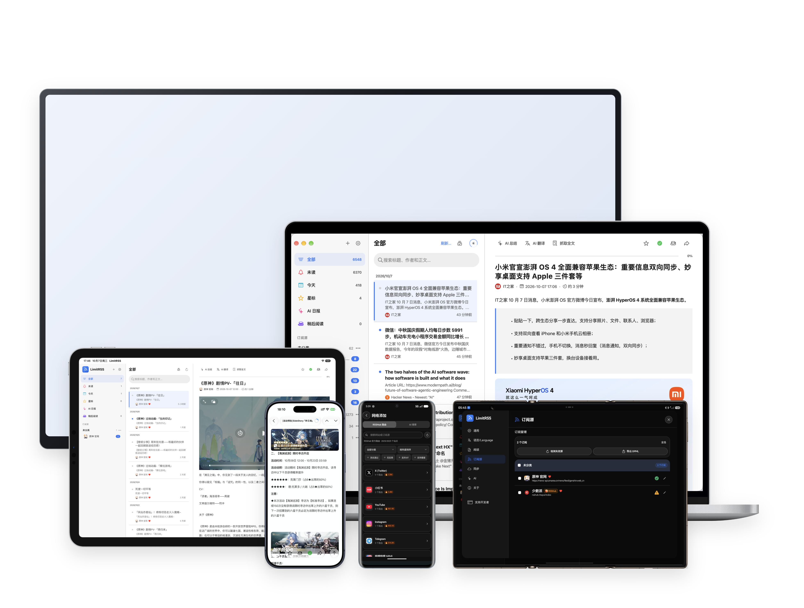

集中订阅，更新不错过
把博客、资讯和感兴趣的网站集中到一处，支持 RSS、Atom 和 RSSHub。自动获取新文章，为特别关注的订阅源开启更新提醒。
LimitRSS 是一款简洁高效的 RSS 阅读器，帮助你集中订阅、整理和阅读来自不同网站的内容。它支持 RSS、Atom 与 RSSHub 订阅源，可按分类管理文章，并提供未读、星标、稍后阅读、特别关注和多设备同步等功能。内置 AI 总结、AI 翻译、智能分类及 AI 日报，帮助你快速掌握重点信息，在减少信息噪音的同时，打造更专注、更个性化的阅读体验。
集中订阅喜欢的内容，用 AI 辅助理解，让整理与回顾更轻松。
把博客、资讯和感兴趣的网站集中到一处，支持 RSS、Atom 和 RSSHub。自动获取新文章，为特别关注的订阅源开启更新提醒。
长文章先看总结，外文内容一键翻译。连接你选择的 AI 服务，按自己的阅读习惯调整总结与翻译方式。
将订阅中的文章汇成一份 AI 日报，集中梳理重点内容。忙碌时快速浏览，也能找到值得继续深入阅读的文章。
用分类整理订阅源，用星标收藏好文章，把来不及读的内容加入稍后阅读。还可以搜索标题、作者和正文，找回看过的内容。
在电脑和手机上阅读，通过自己的 WebDAV 服务同步订阅源、阅读状态与收藏。换一台设备，也能接着整理和阅读。
浏览社区分享的订阅源，一键导入 LimitRSS；也可以分享自己的收藏。广场定期检测订阅源可用性，让发现好内容更省心。
桌前专注阅读，出门随手浏览。在你熟悉的设备上，继续发现好内容。

Windows